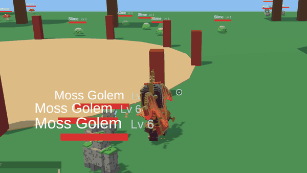
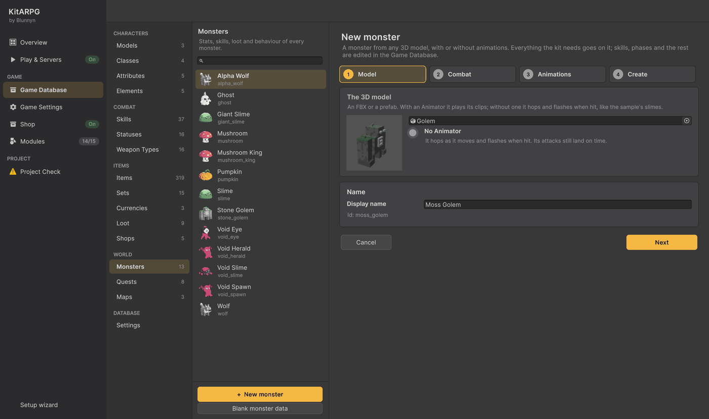
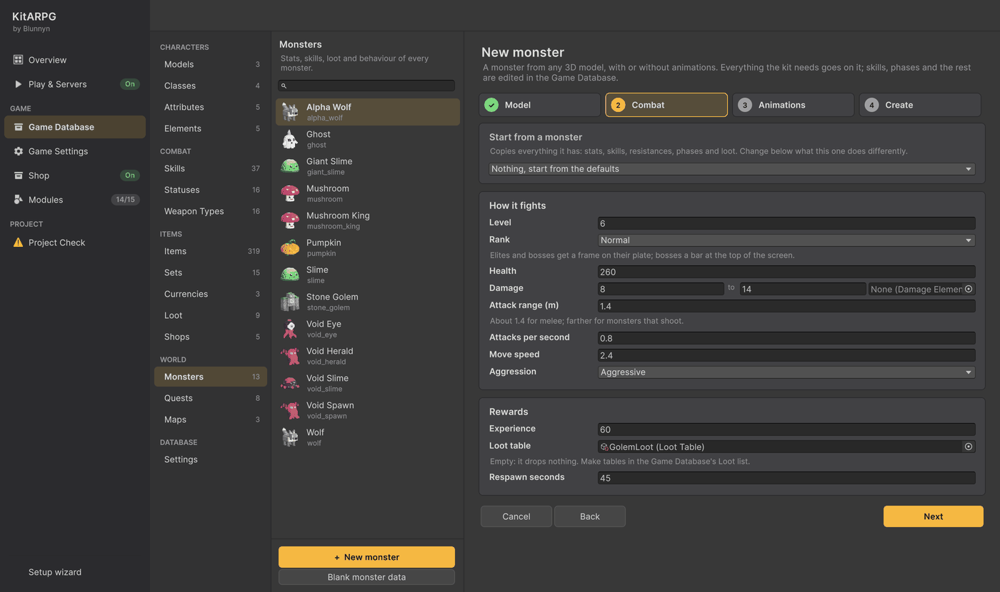
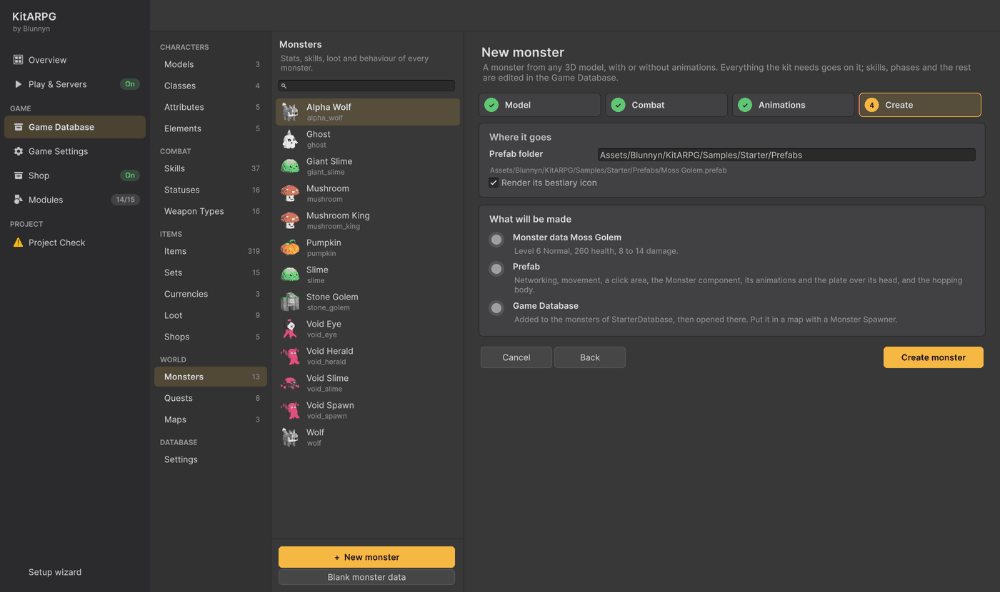
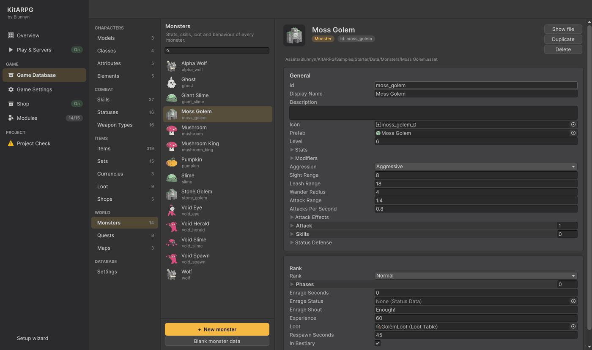
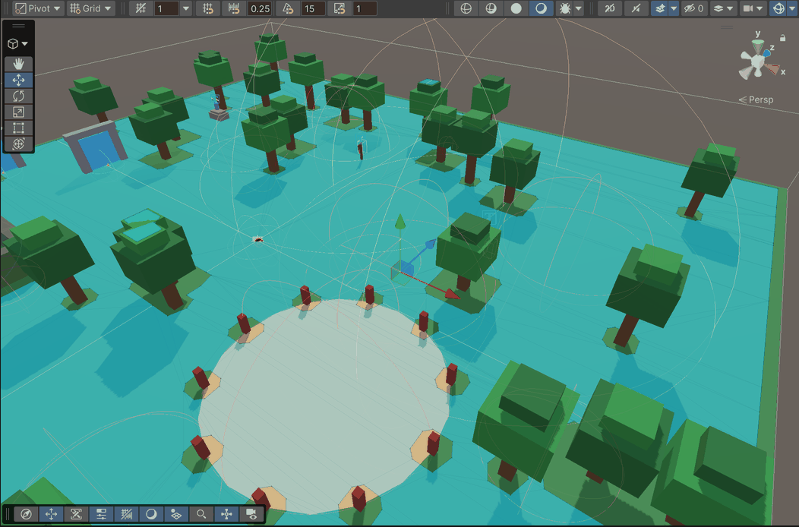
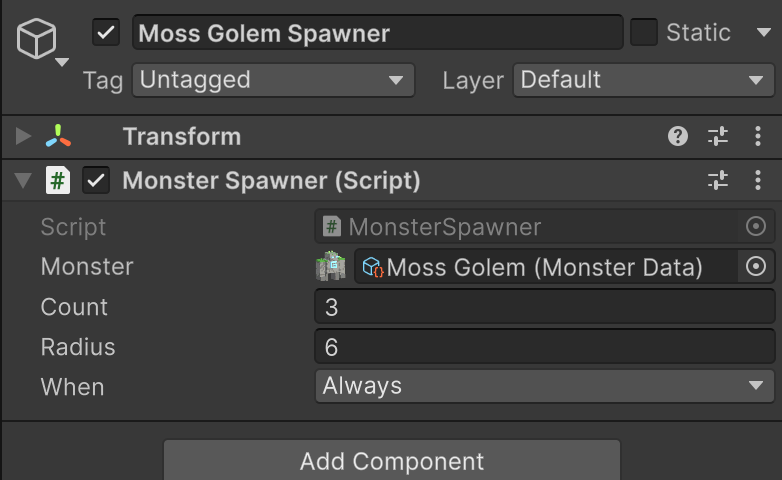

Fazer um monstro
Este guia faz um Moss Golem a partir de um modelo 3D, dá saque a ele e coloca três deles na floresta.

1. Abra o assistente
- No Game Database, abra World > Monsters.
- Pressione + New monster. O assistente abre à direita, em quatro passos: Model, Combat, Animations e Create.
2. Modelo
- Arraste o modelo para o campo: um FBX ou um prefab. Este guia usa
Art/3D/VoxelHero/Monsters/Golem. - A linha abaixo diz Animated quando o modelo tem um
Animator, ou No Animator. Sem um, o monstro ainda se move, pula, ataca no tempo certo e pisca ao ser atingido (o componenteMonsterBodyfaz isso), como os slimes do exemplo. - Digite o Display name:
Moss Golem. O id abaixo,moss_golem, é gerado a partir dele.

Pressione Next.
3. Combate
Start from a monster copia tudo o que outro monstro tem. Deixe em Nothing e defina:
| Campo | Valor |
|---|---|
| Level | 6 |
| Health | 260 |
| Damage | 8 a 14 |
| Move speed | 2.4 |
| Experience | 60 |
| Loot table | GolemLoot |
| Respawn seconds | 45 |
O resto fica com o padrão: alcance corpo a corpo 1,4, 0,8 ataque por segundo, Aggressive.

Pressione Next. O passo Animations só tem algo para escolher em modelos animados: os clipes de parado, andar, golpe recebido, morte e ataque, e quando o golpe do ataque acerta. Pressione Next de novo.
4. Criar
O último passo mostra para onde vai o prefab e lista o que será criado. Deixe Render its bestiary icon ligado e pressione Create monster.

O kit cria os dados do monstro, um prefab com tudo o que um monstro precisa (rede, movimento, área de clique, placa de vida) e o ícone dele, adiciona-o ao banco de dados e o abre. Habilidades, fases, resistências e o resto são editados aqui.

5. Coloque-o no mundo
Os monstros vivem onde um Monster Spawner os mantém.
- Abra a cena
Forest(Samples/Starter/Scenes). - GameObject > Create Empty, chame-o de
Moss Golem Spawnere mova-o para um terreno aberto sobre o NavMesh (a área azul quando o overlay de AI Navigation está ligado), longe doSpawnPoint. - Add Component > Monster Spawner. Defina Monster como Moss Golem, Count como 3 e Radius como 6.
- Salve a cena.
| O spawner na floresta | O inspector dele |
|---|---|
 |
 |
- No Game Database, abra World > Maps > Forest e pressione Read from scene. A partir de agora, o bestiário e o mapa do mundo listam o Moss Golem na floresta.
6. Teste
- Pressione Play e entre no jogo.
- Caminhe até a floresta, ou digite
/map forest. - Digite
/godpara assistir à luta sem morrer, e encontre os golems.
/spawn moss_golem 3 traz três na sua frente em qualquer lugar (eles não voltam), e /killall 20 os elimina.
Próximos passos
- Comportamento, ranks, habilidades e cada campo: Monstros.
- O que ele dropa: Saque.
- Um chefe com fases: Chefes.
- Uma missão para caçá-lo: Fazer uma missão.